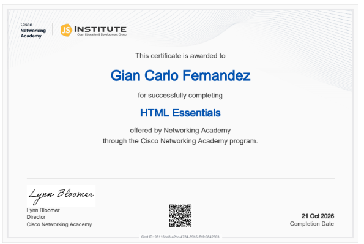
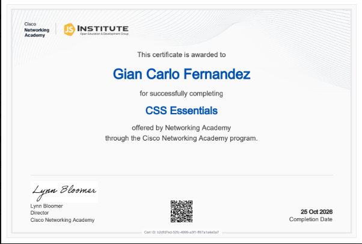
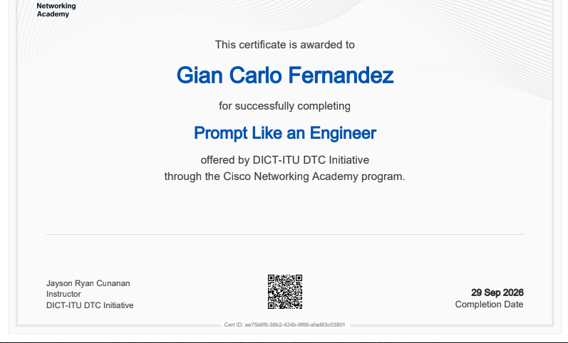

Computer Skills
I'm learning how to use computers and create simple projects using what I learn in class.
Welcome to My Portfolio
Just a student learning new things, discovering my interests, and figuring out what I want to achieve in life.
Get to Know Me
Name: Gian Carlo Flores Fernandez
Course: Bachelor of Science in Information Technology
Date of Birth: May 28, 2008
Hello! I'm Gian Carlo F. Fernandez, and I'm currently a student. I'm still learning a lot of things, both inside and outside the classroom. Sometimes things are difficult, but I try my best to learn from my mistakes and improve.
"Small progress is still progress."
I'm learning how to use computers and create simple projects using what I learn in class.
I try to do my part when working with classmates and help the group finish its tasks.
I'm learning to share my ideas clearly and listen to what other people have to say.
I enjoy learning new lessons, especially when I understand something I found difficult before.
I like activities that keep me active and give me a chance to spend time with other people.
I'm interested in computers and how websites and other digital things are made.
Here are two projects I have worked on as a student. These projects show what I have learned and practiced in my Information Technology studies.

This is one of my school projects. I worked on it to apply what I learned in class and gain more experience in completing tasks and solving problems.

This is another project I completed as part of my learning experience. It helped me practice my skills, explore new ideas, and understand more about creating school projects.
These certificates represent some of the things I have learned and accomplished as I continue to improve my skills.

This certificate shows that I completed a learning activity and gained new knowledge. It reminds me that every opportunity to learn helps me improve my skills and become more confident.
Completion Date: October 21, 2026

This certificate represents my effort and willingness to learn something new. It helped me understand the importance of gaining knowledge and continuing to improve myself.
Completion Date: October 25, 2026

I completed the Prompt Like an Engineer program from Cisco Networking Academy. I learned how to write clear and effective prompts for artificial intelligence (AI). This helped me understand how AI can be useful for learning and working with technology.
Completion Date: September 29, 2026
I know I still have a lot to learn, but these are some of the things I want to work toward:
Thanks for checking out my portfolio. Feel free to visit my Facebook profile!
Phone: 09677147658
Facebook: My Facebook Profile